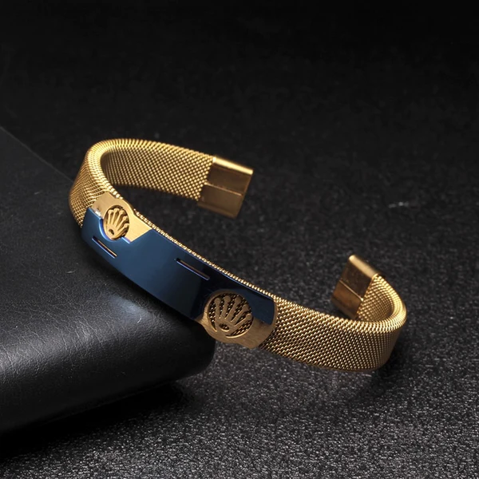
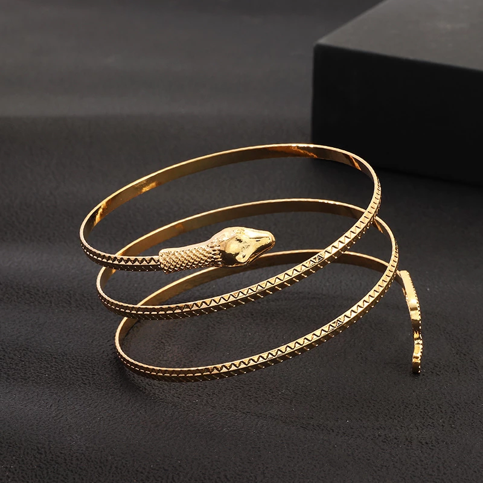

-

R$25,99
COMPRAR
-

R$15,99
COMPRAR
-
O que combina com pulseira de ouro?
Também é possível combinar a pulseira de ouro com anéis, pulseiras, entre outros acessórios complementares. Nesse caso, a harmonização é essencial para valorizar seu visual em ocasiões requintadas. Modelos com pedraria estão cada vez mais populares, porém possuem um valor mais elevado.
Como usar pulseira de ouro feminina?
Cuidado com o equilíbrio da composição. ... Misture cores além da pulseira de ouro. ... Inclua joias delicadas no mix. ... Misture outros materiais de pulseiras femininas. ... Inclua peças diferentes, como uma pulseira artesanal. ... Ouse com tamanhos e espessuras diferentes.